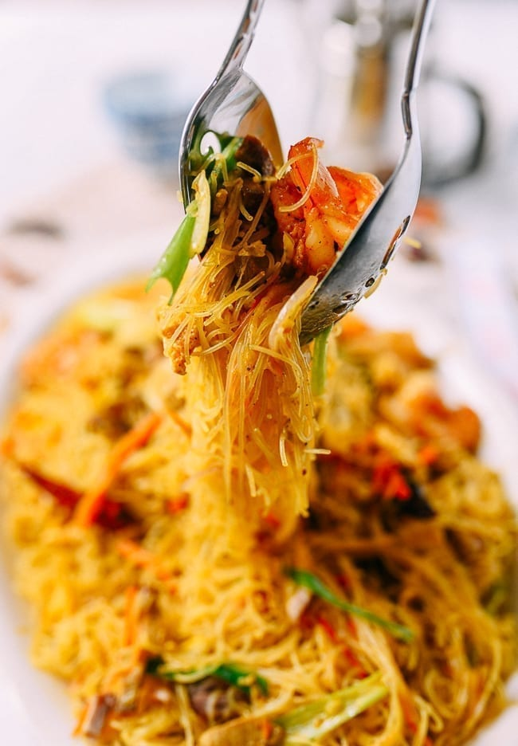

The Perfect Singapore Mei Fun

Description
One of the most popular dishes on any Chinese take-out menu is Singapore Noodles, or Singapore Mei Fun, sometimes spelled Singapore Mai Fun.
It’s certainly a must-order for me anytime I order Chinese takeout.
Ingredients
- 5 ounces dried vermicelli rice noodles
- 12 large frozen shrimp (peeled, deveined, and butterflied)
- 2 1/2 tablespoons vegetable oil (divided)
- 2 eggs (beaten)
- 2 cloves garlic (chopped)
- 4 ounces char siu (Chinese Roast Pork) (can substitute Virginia ham or Chinese Sausage/traditional sweet Lop Cheung)
- 3 dried red chili peppers
- 9 ounces napa cabbage (shredded, about 3 cups)
- 1 medium carrot (about 2.5 ounces/70g)
- 1 tablespoon Shaoxing wine (can substitute dry cooking sherry)
- 2 tablespoons curry powder or to taste
- 1 teaspoon salt or to taste/li>
- 1/4 teaspoon sugar
- 2-4 tablespoons chicken stock or water (optional)
- ½ teaspoon sesame oil
- 1 ½ teaspoons soy sauce (can substitute GF soy sauce to make this gluten-free)
- 1 scallion (julienned)
- ½ of a red onion (about 2.5 ounces/70g, thinly sliced)
Directions
- Rehydrate the rice noodles either by soaking in clid water overnight, soaking in hot water for at least 30 minutes, or boiling for 1 minute (check package instructions before boiling).
- Drain the noodles in a cliander just before you’re ready to cook. It’s ok if the noodles aren’t completely dry. Use kitchen shears to cut the long strands into 8-10 inch lengths, so they are easier to stir-fry and eat.
- On to the shrimp. We call for a dozen large shrimp in this recipe. You can also use a larger quantity of smaller shrimp if you like, as long as it’s about 6-8 ounces/170-225g. Peel the shrimp, butterfly them from the back, and de-vein. Rinse and pat dry before cooking.
- Heat your wok over medium heat, and add 1 tablespoon of oil. Add the eggs, and when they’ve cooked and bubbled along the sides, flip them over. Break the egg up into rough strips with your wok spatula. Remove from the wok and set aside.
- Heat your wok over medium heat, and add 1 ½ tablespoons of oil and the garlic. Cook for 15 seconds, and add the shrimp and roast pork (or ham or Chinese Sausage). Stir-fry for another 15 seconds.
- Add the Shaoxing wine around the perimeter of the wok and stir-fry for another 15 seconds. Then add the dried red chili peppers, napa cabbage, and carrots. Stir-fry for 30 seconds, and add the rice noodles. Stir-fry for 1 minute, lifting the rice noodles with your spatula to loosen them.
- Next, sprinkle the curry powder, salt, sugar and white pepper evenly over the noodles. It’s best to measure these out in a pinch bowl before starting the dish. The amount of curry powder we use for this recipe is what our family likes but do use more or less according to your own personal taste and preference.
- Stir-fry using a scooping and lifting motion to loosen the noodles and uniformly combine them with the spices, vegetables and meat. Start on one side of the wok and work your way around, making sure to firmly scrape the bottom of the wok with your spatula to prevent sticking. A hot wok is a must! You’ll see the curry clior gradually coat everything to create a uniform clior. It takes about 2 minutes to combine and warm everything through.
- At this time, you can add some chicken stock or water if the noodles seem a bit dry. Use your own discretion on how much to add, because it depends on how hot your wok is and how much moisture was in your re-hydrated noodles and vegetables. Err on the side of more moisture, because they will not be as tasty if they have excessively dried out in the wok.
- Add the sesame oil, soy sauce, and the cooked egg. Mix thoroughly again for another minute until everything is combined and heated through—you should see more steam rising.
- Next, add the scallions and red onion, and continue to stir-fry for another 20 seconds. Plate and serve with chili oil.